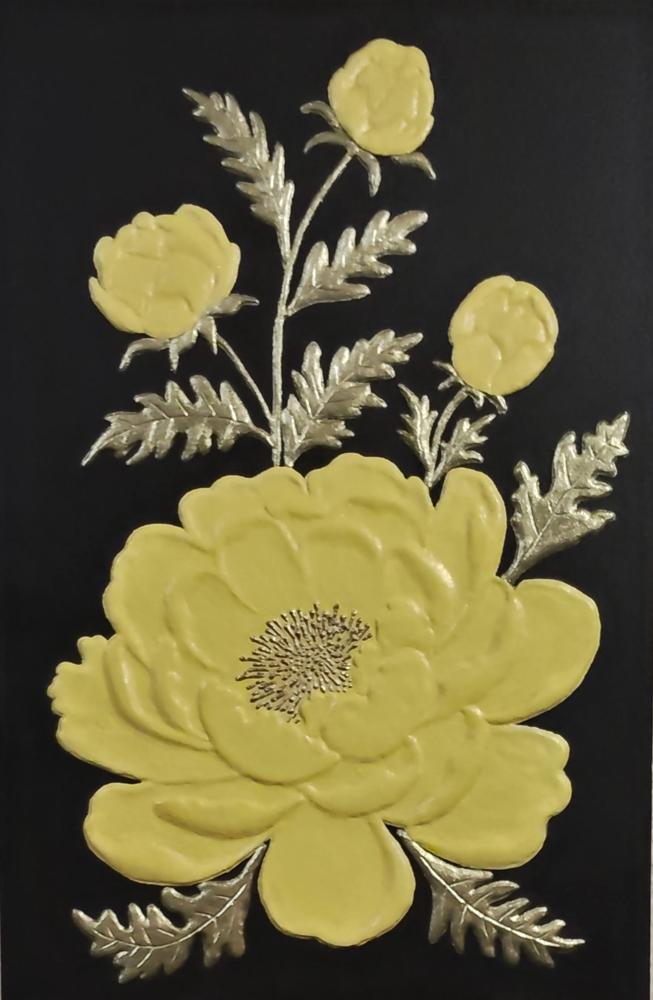

NICOLETA FILIP ART
PEONIA LIMÓN
Composición floral vertical protagonizada por una gran peonía en tono amarillo limón, acompañada de tres flores y follaje decorativo en acabado plateado sobre un fondo negro.
Sobre la obra
PEONIA LIMÓN presenta una composición floral vertical protagonizada por una gran peonía en tono amarillo limón.
La composición se completa con tres flores dispuestas en formación y un conjunto de tallos y hojas en acabado plateado sobre un fondo negro.
Presentación artística
La pieza presenta una peonía de gran volumen en la zona inferior y tres flores más pequeñas situadas en la parte superior.
Los pétalos están modelados con relieve y acabado amarillo limón, mientras que los tallos y las hojas presentan acabado plateado, creando un marcado contraste sobre el fondo negro.
Ficha técnica
- Año
- 2026
- Dimensiones
- 40 × 60 cm
- Soporte
- Madera
- Técnica
- Técnica estándar.
- Categoría
- Floral
Si deseas recibir información sobre esta obra, puedes solicitarla directamente.
SOLICITAR INFORMACIÓN →